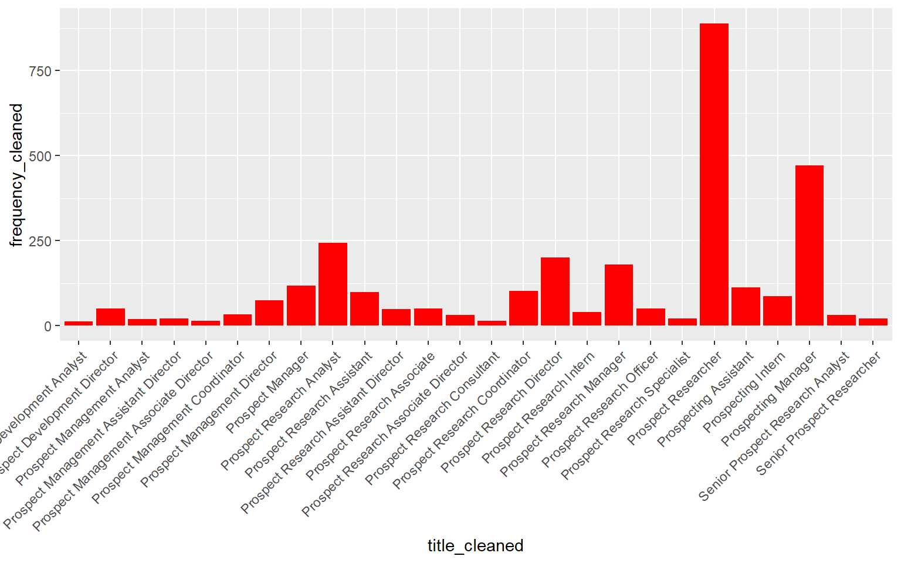

Comparison table
Software terms metioned in 22 analyst job descriptions gathered starting 7/2024
Software term chart

Prospect Dev job titles / frequency from public CMAP dataset
Job title chart (>10 instances)

Valuebox with pencil icon
22
Valuebox with trash icon
22
Valuebox with chat icon
22